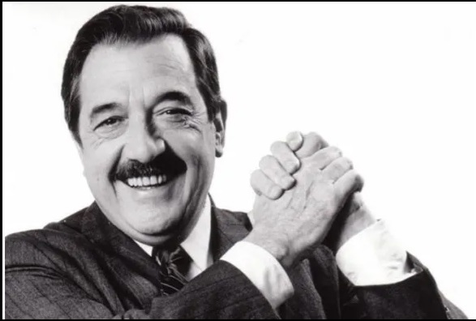
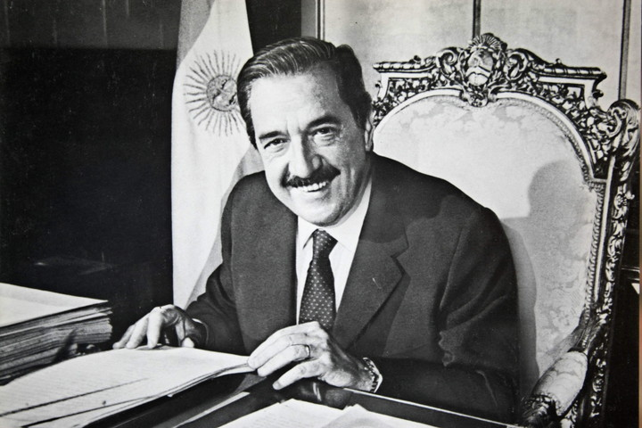
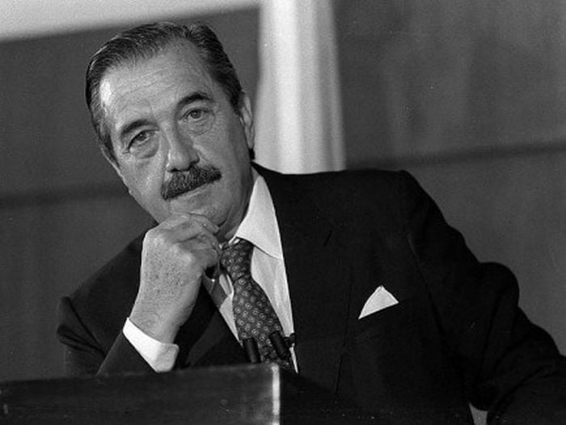
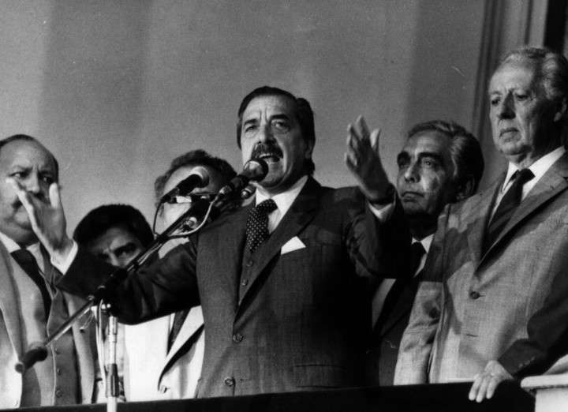
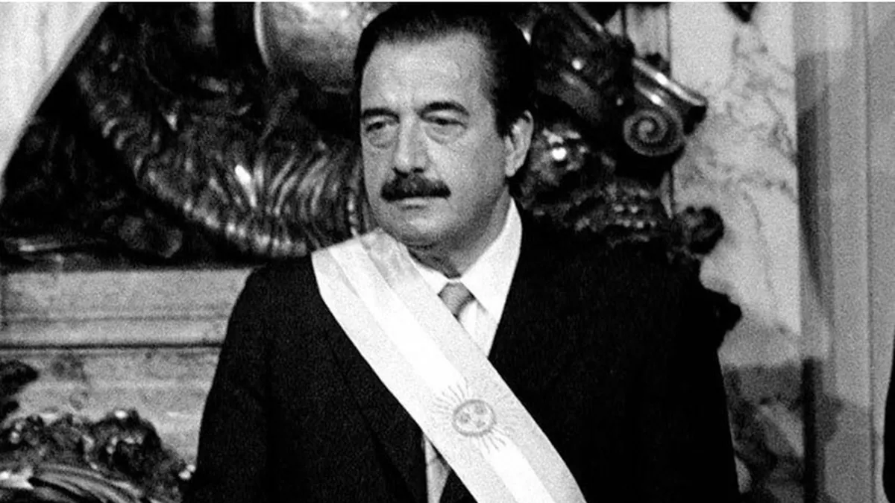

"Con la democracia se come, se cura y se educa"

“Les pido que nadie se deje deslumbrar por los resplandores de las glorias del pasado”

"No votar, es dejar que otros decidan por nosotros"

"Compatriotas, Felices Pascuas! La casa esta en orden"

"Los militares deben recordar que son servidores de la Republica y no sus amos"